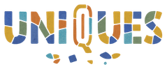

36% of the cycle has passed · scored on steps done, weighted by importance. No Key Result has reached its final outcome yet.
Previous cycle closed at 73% · this cycle starts from its own baselinesEach Key Result is split into steps, taken from the Delivery Plan and adjusted to what the team reports. Each step has an importance weight:
3 the outcome itself, or the step that unlocks it
2 a main step
1 a supporting step
A done step counts in full, a step in progress counts half. The score is the weighted share of steps done, so a Key Result reaches 100% only when every step, including the outcome, is done.
Weights and statuses are Claude's reading of Offinity Diaries and the UnIqueS brain documents, checked by Tam. Open a Key Result to see its steps and the source of each one.